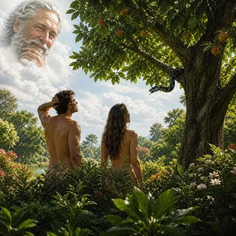

Cualquiera que lea el relato del Génesis con ojos críticos —y no con la reverencia de un devoto— lo que encuentra no es una revelación divina, sino una colección de incoherencias que encajan más con mitología primitiva que con la obra de un supuesto Ser Supremo. Basta leer los primeros tres versículos, que describen a «Dios» creando «los cielos y la tierra» (Génesis 1:1) y diciendo «Sea la luz; y fue la luz» (Génesis 1:3), para preguntarse: ¿Quién estaba allí tomando nota de todo eso? ¿Cómo sabes que fue así que sucedió?


Pero, deja a un lado por ahora eso, y tantas otras insensateces que los creyentes se toman tan en serio, como luz sin fuente de luz, conteo de días sin que existiera el Sol, plantas sin fotosíntesis porque todavía no había luz solar, o un Sol y una Luna que son simples «lumbreras» colgadas «en la expansión de los cielos para alumbrar sobre la tierra» (Génesis 1:3-15), y vayámonos directamente a la cúspide de todo: el Jardín de Edén (Génesis 2:15), el sitio perfecto creado por «Dios» para que viviera y «señoreara» su especie viviente favorita: el ser humano.
El escenario es ya de por sí desconcertante: un «Dios» todopoderoso, omnisciente e infinitamente bueno, que decide crear a los humanos «a su imagen y semejanza» (Génesis 1:26)… pero coloca en su hábitat perfecto no uno, sino dos fuentes de peligro: el Árbol de la Ciencia del Bien y del Mal (Génesis 2:17), y el Árbol de la Vida (Génesis 3:22). Y no precisamente como decoración, sino como trampas fatídicas (y hasta diríamos, malintencionadas). Porque no eran «pruebas», como muchos ingenuamente opinan, ya que un ser que conoce el futuro no necesita experimentar para saber qué ocurrirá.
Y como si la curiosidad —esa misma que «Dios» implantó en sus criaturas— no fuera suficiente para empujar a los primeros humanos a explorar lo prohibido, aparece además en la escena una serpiente que no sólo podía hablar, sino que era astuta y tenía intenciones tenebrosas (Génesis 3:1). Aquí entonces, el absurdo alcanza niveles casi literarios: ¿Qué hace un ser así en aquel maravilloso Paraíso? ¿Quién la creó y la puso allí? ¿Quién le otorgó la capacidad de razonar, de engañar y de hablar? ¿Un «Dios» perfectamente bueno diseñó deliberadamente un agente del engaño dentro de su propio escenario perfecto? ¿Para qué? ¿Para hacer más entretenida la obra? Definitivamente, el relato no resiste ni un mínimo análisis ético coherente.
Sin embargo, el núcleo del problema es todavía más revelador: aquel «Dios» tan bondadoso no quería que los humanos fueran conscientes ni sabios, porque no quería que fueran como él, «sabiendo el bien y el mal» (Génesis 3:57). Es decir, crea seres a su imagen… pero les impide adquirir precisamente aquello que los haría semejantes a él. O sea, en lugar de otorgarles sabiduría desde el inicio, les coloca una prohibición que, en la práctica, garantiza la transgresión. Un diseño que lejos de un ser perfecto, más parece el guion de una tragedia anunciada.
Y luego viene la supuesta advertencia divina sobre aquel fruto prohibido: «el día que de él comieres, ciertamente morirás» (Génesis 2:17). Sin embargo, comen… y no mueren. Al menos no en el sentido inmediato que cualquier lector razonable entendería. El fruto no era venenoso. Incluso Génesis 3:4 recoge la contradicción directa: «no moriréis», les dijo la serpiente, y al menos a corto plazo tenía razón. Adán, según el propio relato, vivió 930 años (Génesis 5:5). Entonces, ¿quién mintió, «Dios» o la serpiente? Si la amenaza era simbólica o diferida, el texto no lo aclara; si era literal, simplemente no se cumple. Y ese recurso que usan los teólogos de que se trataba de una «muerte espiritual» (como si eso tuviera sentido), no es más que un parche moderno para tapar una grieta antigua.
Pero el Árbol de la Vida añade otra capa de incoherencia. Si Adán y Eva eran ya inmortales, aquel árbol era redundante. Y si fueron creados inmortales, ¿cómo podían comprender la amenaza de la muerte, si nunca habían visto a nadie morir a su alrededor? Ahora, si la inmortalidad dependía del acceso a ese árbol, entonces el castigo divino consistió en retirarles un recurso que el mismo «Dios» había puesto a su alcance. ¿Alguien entiende esta lógica?
Pero la supuesta «caída» de aquella pareja tiene además consecuencias cósmicas desproporcionadas. No sólo los humanos son castigados: toda la creación queda perjudicada. Porque a partir de entonces, el sufrimiento y la muerte no son exclusivos del ser humano. Todo queda afectado, animales, plantas… por una infracción cometida por dos individuos que, para colmo, carecían del conocimiento moral necesario para entender plenamente su acto. La defensa teológica de que Adán actuaba como «representante» de toda la creación, suena más a justificación legal improvisada que a un principio de justicia coherente. Es como si un padre de familia cometiera un delito, y los tribunales sentencian con la misma pena a toda la familia. En cualquier sistema ético mínimamente razonable, castigar a terceros inocentes por la falta de otro es simplemente injusto.
Y luego está el problema práctico del Edén. Hoy vivimos en un ecosistema en que unos seres vivos mueren para que otros podamos vivir. Tanto en nuestra especie como en muchas otras, nos alimentos de la carne de otros animales, y de plantas que también son seres vivos. Pero, ¿qué pasa cuando todos deben permanecer inmortales? ¿Será entonces que los primeros seres vivos no tenían que alimentarse?
No es así, porque el propio texto sugiere que la dieta de Adán y Eva era originalmente vegetariana, ya que «Dios» les dice: «os he dado toda planta que da semilla… y todo árbol en que hay fruto… os serán para comer» (Génesis 1:29). Lo cual plantea otra paradoja interesante: si nada debía morir, ¿qué implicaba consumir plantas? La respuesta está en la mentalidad hebrea antigua, que no consideraba a las plantas como «vida» en el mismo sentido que a los animales. Pero esto no resuelve el problema, sólo lo desplaza: el Edén no es un ecosistema funcional, sino una construcción simbólica con reglas arbitrarias.
Por si fuera poco, la narrativa evoluciona hacia una teología aún más extraña: ese mismo «Dios» que aparentemente diseñó un mundo sin muerte, termina deleitándose de sacrificios sangrientos. E incluso prefirió la ofrenda de ovejas que le hizo Abel, que la que la de frutos de la tierra que le hizo Caín (Génesis 4:2-5). La transición no se explica; simplemente ocurre, como si la coherencia no fuera un requisito.
Las interpretaciones posteriores, lejos de aclarar el panorama, lo complican aún más. La idea de que la expulsión del Edén fue para evitar que los humanos vivieran eternamente «en pecado», es un ejemplo clásico de racionalización retroactiva. Se intenta salvar la lógica del relato, añadiendo capas de explicación que, en realidad, sólo evidencian su fragilidad interna.
Pero finalmente el golpe definitivo no proviene de la filosofía, sino de la ciencia. Con Charles Darwin y la teoría de la evolución, la figura de una pareja humana original se vuelve insostenible. La genética moderna confirma que nunca existió una única «primera pareja» de la cual descendemos. Y entonces, el relato del Edén deja de ser historia, para ocupar su lugar natural: el de mito fundacional.
Y con ello, todo el edificio teológico que se construye sobre esa base —el «pecado original», la necesidad de redención, el supuesto sacrificio de Jesús— queda suspendido en el aire. Porque si no hubo «caída», no hay culpa heredada; y si no hay culpa heredada, la redención deja de ser una necesidad universal para convertirse en la solución a un problema que nunca existió.
En resumen, el Edén no es el Paraíso perdido de la humanidad, sino un ejemplo interesante de cómo las culturas antiguas intentaban explicar el mundo con los pobres recursos narrativos que tenían. El problema surge cuando esos relatos, cargados de simbolismo y contradicción, se siguen defendiendo como verdades literales en pleno siglo XXI. Ahí es donde el mito deja de ser poesía… y empieza a convertirse en obstáculo para el pensamiento crítico.
[Godless Freeman]
Comentarios
Comments powered by Disqus